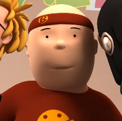

Datos generales

Correo: icarvajalm@correo.uss.cl
Ciudad: Calama
País: Chile
Edad: 22 años
Datos académicos
Carrera: Ingeniería Civil Informática
Universidad: Universidad San Sebastián
Semestre: 8°
Lenguajes de programación: HTML y CSS
Intereses académicos: Inteligencia Artificial
Descripción breve
Voy en 4to año de Ingeniería Civil Informática y me interesa crear soluciones útiles con tecnología. Me gusta seguir aprendiendo, mejorar en programación y enfrentar nuevos desafíos.
Listado de proyectos
- Desarrollo de una página web personal utilizando HTML y CSS.
- Creación de una interfaz básica para gestionar tareas académicas.